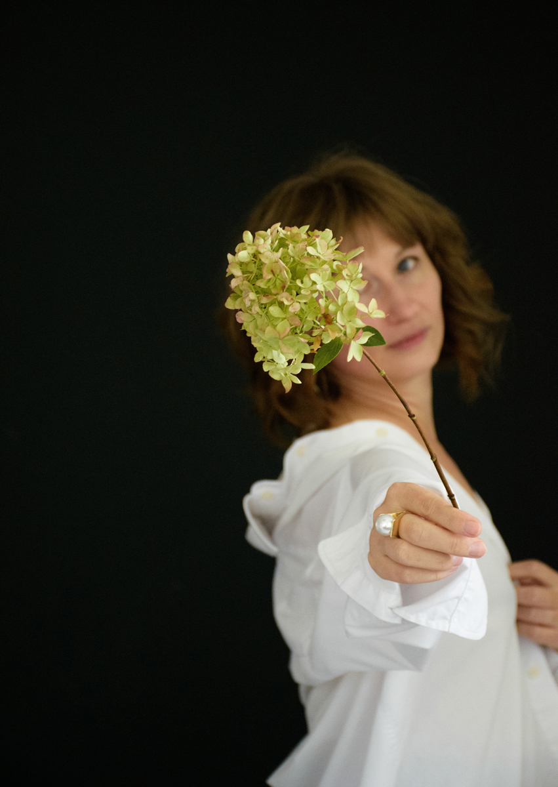

Wie ben ik
Olga van Vugt
Holistische therapeute bij Praktijk Helderheid in Megen.

Wie ben ik
Holistische therapeute bij Praktijk Helderheid in Megen.
Soms vraagt het leven alles van je. Van jongs af aan stond ik oog in oog met verlies, trauma en het gevoel er alleen voor te staan. Ik verloor mijn tweelingbroer nog vóór onze geboorte, verloor mijn vader, had een afstandelijke moeder, overleefde meerdere levensbedreigende situaties, leefde in onveiligheid, burn-outs, intense verhuizingen en een leven vol rollen die nooit écht bij me pasten.
Maar diep vanbinnen bleef één verlangen branden: begrijpen waarom we hier zijn — en hoe we echt kunnen helen.
In plaats van te breken, ben ik gaan zoeken. Ik doorliep een lange weg van persoonlijke ontwikkeling en spiritueel ontwaken. Ik werkte jarenlang in het bedrijfsleven, onderwees talen, begeleidde mensen uit allerlei culturen, én… ik bleef leren. Over energie, het lichaam, trauma, heling en bewustzijn. Alles wat ik vandaag geef, heb ik geleerd en zelf geleefd.
Mensen voelen zich bij mij gezien, veilig en op hun gemak. Dat is geen toeval. Ik combineer mijn intuïtieve vermogens met mijn uitgebreide levenservaring, een diepe menselijke wijsheid én professionele kennis.
Of je nu komt voor een massage, een diepgaande sessie, het transformatiespel of een persoonlijk traject — je wordt ontvangen door iemand die jouw pijn kent. Geen maskers, geen snelle oplossingen, maar oprechte aandacht van een vrouw die weet hoe het is om vast te zitten… én hoe het voelt om eindelijk vrij te ademen.
"Ik geloof dat we pas echt kunnen thuiskomen in onszelf als we leren luisteren naar lichaam, geest en ziel. Zodat je niet langer overleeft, maar leeft. Met rust in je hoofd, energie in je lijf en vertrouwen in je pad."

Plan een gratis kennismakingsgesprek van 30 minuten. Gewoon jezelf zijn, meer is niet nodig.
Plan gratis kennismaking